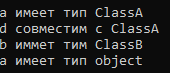
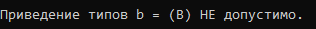
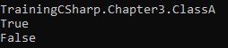

Динамические идентификаторы типов
Динамическая идентификация типов (RTTI) позволяет определить тип объекта во время выполнения программы.
Проверка типа с помощью оператора is
class ClassA {}
class ClassB : ClassA {}
...
public static void demo()
{
ClassA a = new ClassA();
ClassB b = new ClassB();
if(a is ClassA) Console.WriteLine("a имеет тип ClassA");
if(b is ClassA) Console.WriteLine("d совместим с ClassA");
if(b is ClassB) Console.WriteLine("b иммет тим ClassB");
if(a is object) Console.WriteLine("a имеет тип object");
}
В результате:

Применение оператора as
(произвести преобразование типов во время выполнения)
class ClassA {}
class ClassB : ClassA {}
...
public static void demo()
{
ClassA a = new ClassA();
ClassB b = new ClassB();
b = a as ClassB; // выполняется приведение типов
if(b == null) Console.WriteLine("Приведение типов b = (В) НЕ допустимо.");
else Console.WriteLine("Приведение типов b = (В) допустимо.");
}
В результате:

Применение оператора typeof
(информация о самом типе)
class ClassA {}
class ClassB : ClassA {}
...
Type type = typeof(ClassA);
Console.WriteLine(type.FullName);
Console.WriteLine(type.IsClass);
Console.WriteLine(type.IsAbstract);
В результате:

Created with the Personal Edition of HelpNDoc: Produce Kindle eBooks easily